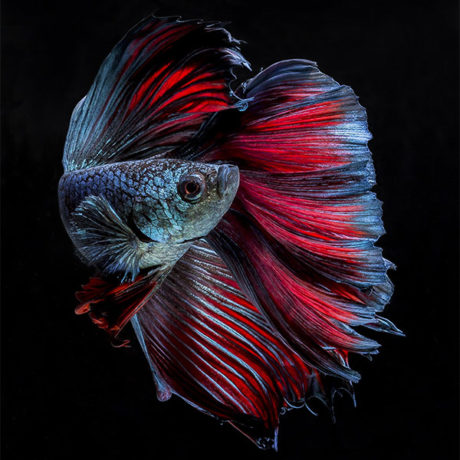
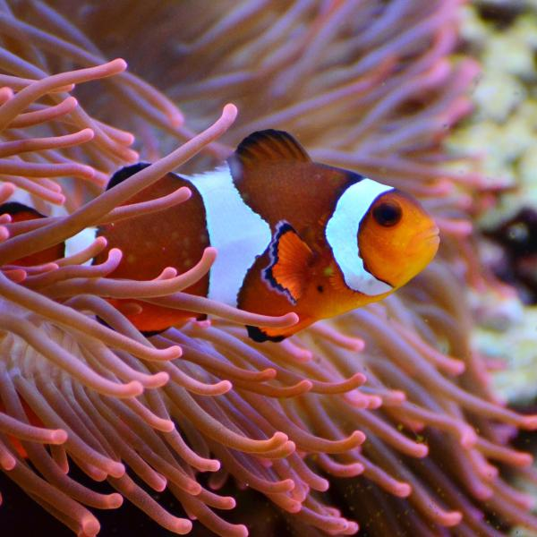
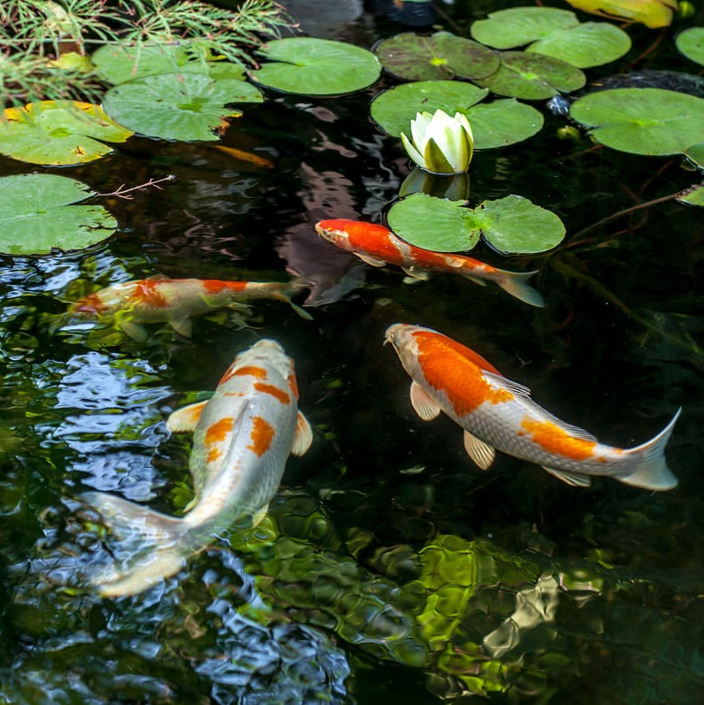
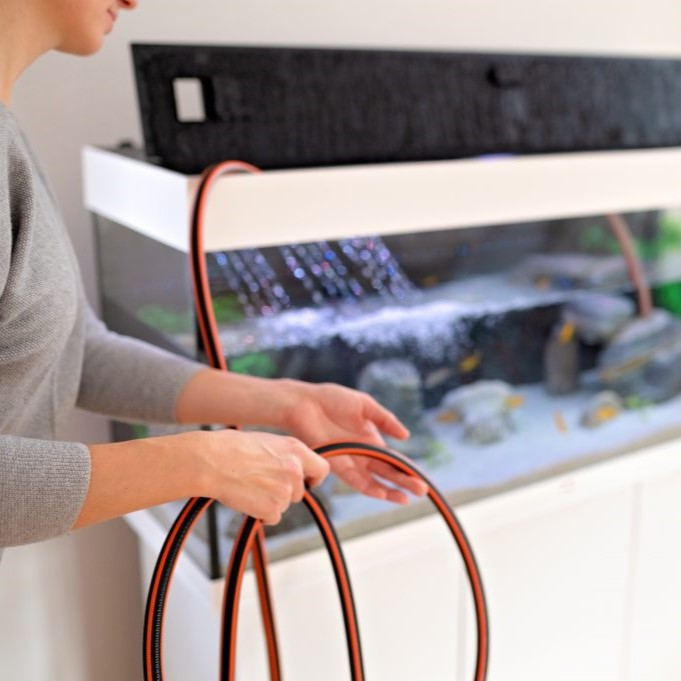

Há mais de 20 anos a Aquario Show está presente no mercado de aquarismo em Belo Horizonte oferecendo sempre o melhor atendimento e produtos de qualidade.
|  AQUARIOS DE ÁGUA DOCE |  AQUARIOS MARINHOS |  LAGOS DE JARDINS |  PRODUTOS PARA MANUTENÇAO |
|---|---|---|---|
| Temos uma farta variedade de espécies de peixes de água doce, além de rações, equipamentos, sistema de filtragem, sistema de iluminação e acessórios diversos. | Tudo em produtos para aquarismo de água salgada. Suplementos, acessórios, iluminação e filtragem, aquários completos, peixes, corais, invertebrados e muito mais. | Temos um vasto know-how em projeto, execução, implantação, manutenção e acompanhamento de lagos artificiais. | Filtros, rações, luminarias, testes e muito mais. |
Alguns cuidados básicos para manter um aquário saudável incluem:


 id="contato">
id="contato">
Entre em contato conosco para mais informações:
Email: contato@aquarios.com